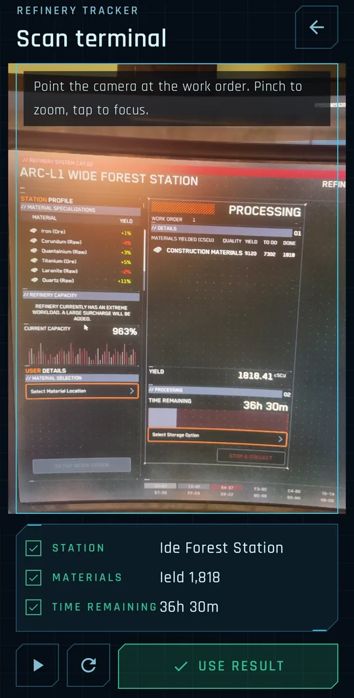
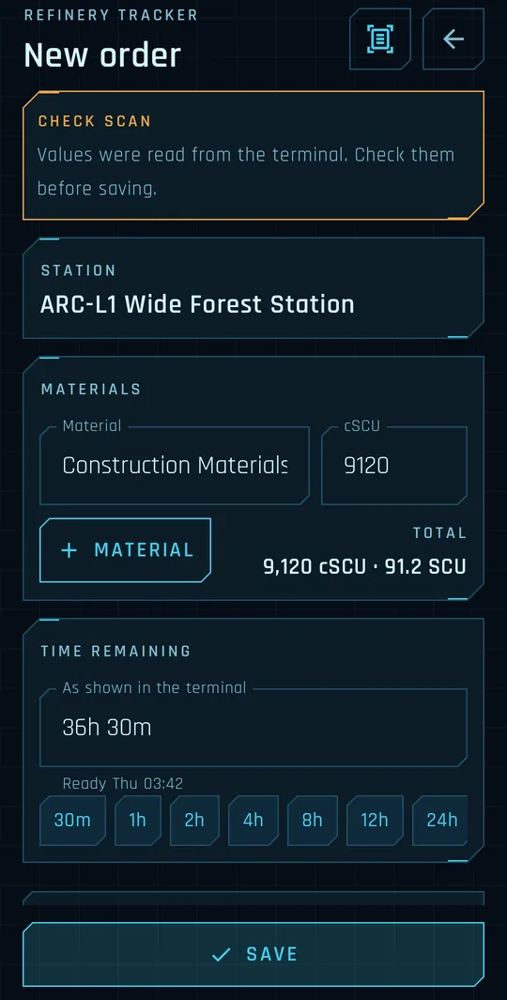

Android-App
Refinery Tracker
Behalte deine Raffinerieaufträge im Blick: Station, Materialien, Restzeit. Das Handy erinnert dich, wenn ein Auftrag fertig ist, ohne Konto, Server oder Internet. Aufträge lassen sich per Link mit anderen Spielern teilen.
Keep track of your refinery orders and get notified when they are done. No account, no server.




Installation
- APK herunterladen und öffnen.
- Wenn Android fragt: Installation aus dieser Quelle erlauben.
- Fertig. Updates installierst du genauso, deine Aufträge bleiben erhalten.